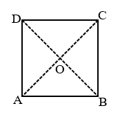
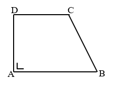
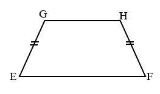
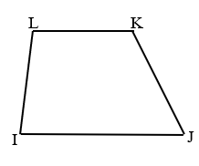
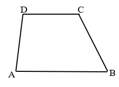
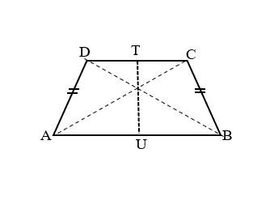
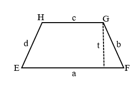
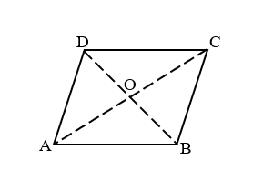
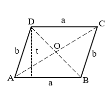
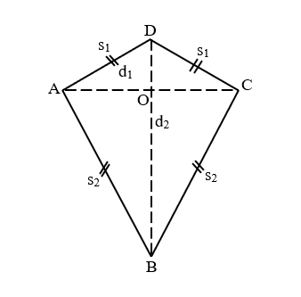

A. Segiempat
Segiempat adalah bangun datar yang memiliki empat sisi. Jenis-jenis segiempat antara lain:
1. Persegi Panjang

Unsur-unsur persegi panjang
- Sisi-sisi persegi panjang, yaitu: AB, BC, CD, AD.
- Titik sudut persegi panjang, yaitu: A, B, C, D.
- Sudut-sudut persegi panjang, yaitu: DAB, ABC, BCD, dan CDA.
- Diagonal, yaitu: AC dan BD.
Sifat-sifat persegi panjang
- Sisi-sisi yang berhadapan sejajar dan sama panjang.
- Keempat sudutnya siku-siku dan sama besar.
- Kedua diagonalnya sama panjang dan saling berpotongan membagi dua sama panjang.
- Memiliki 2 simetri lipat.
- Memiliki 2 simetri putar.
- Dapat menempati bingkai dengan 4 cara.
Rumus Keliling dan luas persegi panjang
- Keliling = 2(p + l)
- Luas = p x l
2. Persegi
Unsur-unsur persegi
- Sisi-sisi persegi, yaitu: AB, BC, CD, AD.
- Titik sudut persegi, yaitu: A, B, C, D.
- Sudut-sudut persegi, yaitu: DAB, ABC, BCD, dan CDA.
- Diagonal, yaitu: AC dan BD.
Sifat-sifat persegi
- Keempat sisinya sama panjang.
- Sisi-sisinya yang berhadapan sejajar.
- Keempat sudutnya siku-siku dan sama besar.
- Kedua diagonalnya sama panjang dan saling berpotongan membagi dua sama panjang.
- Kedua diagonalnya berpotongan tegak lurus.
- Mempunyai 4 simetri lipat.
- Mempunyai 4 simetri putar.
- Dapat menempat bingkainya dengan 8 cara.
Rumus Keliling dan luas persegi
- Keliling = 4s
- Luas = s x s = s²
3. Trapesium
Jenis-jenis trapesium
-

- Trapesium siku-siku adalah trapesium yang memiliki sepasang sudut siku-siku.
AB // CD, sudut DAB dan sudut ADC = 90 derajat.

- Trapesium sama kaki adalah trapesium yang kaki-kakinya sama panjang.
EF // GH, EH = FG

- Trapesium sebarang adalah trapesium yang sudutnya tidak siku-siku dan kaki-kakinya tidak sama panjang.
IJ // KL
Sifat-sifat trapesium
- Mempunyai sepasang sisi berhadapan yang sejajar (AB // CD).
- Jumlah ukuran sudut-sudut yang berdekatan di antara dua sisi sejajar pada trapesium besarnya 180 derajat.
- Sudut BAD dan sudut ADC = 180 derajat.
- Sudut ABC dan sudut BCD = 180 derajat.
Sifat-sifat trapesium sama kaki
- Mempunyai dua sisi sama panjang, yaitu kaki-kaki trapesium (AD = BC).
- Mempunyai dua pasang sudut yang sama besar (BAD = ABC dan ADC = BCD).
- Mempunyai sepasang diagonal yang sama panjang (AC = BD).
- Mempunyai satu sumbu simetri.
Rumus Keliling dan luas trapesium
- Keliling = a + b + c + d
- Luas = ½ × (a + b) × t
4. Jajargenjang
Sifat-sifat persegi
- Sisi-sisi yang berhadapan sama panjang dan sejajar. AB = CD dan AB//CD
- Sudut-sudut yang berhadapan sama besar. Sudut DAB = sudut BCD
- Jumlah besar sudut-sudut yang berdekatan adalah 180 derajat. Sudut DAB + sudut ABC = 180 derajat
- Diagonal-diagonal saling membagi dua sama panjang. Pada diagonal AC panjang AO = OC Pada diagonal BD panjang BO = OD
AD = BC dan AD//BC
Sudut BCD = sudut CDA
Sudut ABC + sudut BCD = 180 derajat
Sudut BCD + sudut CDA = 180 derajat
Sudut CDA + sudut DAB = 180 derajat
Rumus Keliling dan luas persegi
- Keliling = 2a + 2b = 2(a + b)
- Luas = a x t
5. Belah Ketupat
Sifat-sifat belah ketupat

- Semua sisi sama panjang dan memiliki dua pasang sisi sejajar. AB = BC = CD = AD
- Diagonal-diagonalnya merupakan sumbu simetri.
- Kedua diagonal saling tegak lurus dan membagi dua sama panjang. AC ⊥ BD panjang AO = OC dan BO = OD
- Sudut-sudut yang berhadapan sama besar dan dibagi dua sama besar oleh masing-masing diagonal. Sudut ABC = sudut ADC dan sudut BCD = sudut BAD
AB//CD dan BC//AD
Sudut ABD = sudut CBD
Sudut ADB = sudut CDB
Sudut BAC = sudut DAC
Sudut BCA = sudut DCA
Rumus Keliling dan luas belah ketupat

- Keliling = 4a
- Luas = ½ (d1 x d2) = d1 x d2/2
6. Layang-layang
Sifat-sifat layang-layang
- Mempunyai dua pasang sisi sama panjang. AB = BC dan AD = CD
- Kedua diagonal saling berpotongan tegak lurus dan salah satu diagonalnya membagi dua sama panjang. AC ⊥ BD
- Salah satu diagonalnya merupakan sumbu simetri, yaitu BD.
- Mempunyai sepasang sudut berhadapan yang sama besar. Sudut BAD = sudut BCD
Sudut AOB = sudut BOC = sudut COD = sudut AOD = 90 derajat
AO = OC
Rumus Keliling dan luas layang-layang
- Keliling = 2(s1 + s2)
- Luas = ½ (d1 x d2) = d1 x d2/2
B. Segitiga
1. Jenis-jenis segitiga
- Segitiga berdasarkan panjang sisinya
- Segitiga Sama Kaki: Segitiga yang memiliki dua sisi sama panjang.
- Segitiga Sama Sisi: Segitiga yang memiliki tiga sisi sama panjang.
- Segitiga Sebarang: Segitiga yang ketiga sisinya tidak sama panjang.


- Segitiga berdasarkan besar sudutnya
- Segitiga Siku-siku: Segitiga yang salah satu sudutnya siku-siku.
- Segitiga Lancip: Segitiga yang ketiga sudutnya lancip.
- Segitiga Tumpul: Segitiga yang salah satu sudutnya tumpul.


2. Sifat-sifat segitiga
- Sifat segitiga siku-siku
- Memiliki satu sudut siku-siku (90 derajat)
- Berlaku teorema Pytagoras : "Kuadrat sisi miring segitiga siku-siku sama dengan jumlah kuadrat sisi siku-siku segitiga tersebut"
- Sifat segitiga sama kaki
- Mempunyai dua sisi sama panjang
- Mempunyai dua sudut yang sama besar
- Mempunyai satu sumbu simetri.
- Dapat menempati bingkai secara tepat dengan 2 (dua) cara.
- Sifat segitiga sama sisi
- Mempunyai tiga sisi sama panjang
- Mempunyai tiga sudut yang sama besar (60 derajat)
- Mempunyai tiga sumbu simetri.
- Mempunyai tiga simetri putar.
- Dapat menempati bingkai secara tepat dengan 6 (enam) cara..
- Keliling: K = a + b + c (dimana a, b, dan c adalah panjang sisi segitiga)
- Luas: L = ½ × alas × tinggi
- Luas: L = √(s(s-a)(s-b)(s-c))
3. Rumus keliling dan luas segitiga
Rumus untuk menghitung luas dan keliling segitiga:Jika hanya diketahui panjang ketiga sisinya:
Contoh Soal
Berikut adalah beberapa contoh soal yang bisa membantu memahami materi segiempat dan segitiga:
Contoh Soal 1: Keliling dan Luas Persegi Panjang
Pak Roni memiliki sebidang lahan berbentuk persegi panjang dengan ukuran 20m x 10m. Tentukan keliling dan luas dari persegi panjang tersebut
Jawaban:Keliling (K) persegi panjang : K = 2 (p + l) = 2 (20 + 10) = 2 x 30 = 60m
Luas (L) persegi panjang: L = p × l = 20 × 10 = 200 m²
Contoh Soal 2: Keliling dan Luas Persegi
Sebuah persegi memiliki panjang sisi 8 cm. Tentukan keliling dan luas dari persegi tersebut.
Jawaban:Keliling (K) persegi: K = 4 × s = 4 × 8 = 32 cm
Luas (L) persegi: L = s × s = 8 × 8 = 64 cm²
Contoh Soal 3: Keliling dan Luas Trapesium
Sebuah trapesium memiliki panjang sisi sejajar 12 cm dan 8 cm, dengan tinggi 6 cm. Tentukan keliling dan luas trapesium tersebut jika panjang sisi miringnya masing-masing adalah 5 cm dan 7 cm.
Jawaban:Keliling (K) trapesium: K = 12 + 8 + 5 + 7 = 32 cm
Luas (L) trapesium: L = ½ × (a + b) × t = ½ × (12 + 8) × 6 = 60 cm²
Contoh Soal 4: Keliling dan Luas Jajargenjang
Sebuah jajargenjang memiliki panjang alas 10 cm dan tinggi 8 cm. Jika panjang sisi miringnya adalah 12 cm, tentukan keliling dan luas jajargenjang tersebut.
Jawaban:Keliling (K) jajargenjang: K = 2 × (a + s) = 2 × (10 + 12) = 44 cm
Luas (L) jajargenjang: L = a × t = 10 × 8 = 80 cm²
Contoh Soal 5: Keliling dan Luas Belah Ketupat
Sebuah belah ketupat memiliki panjang diagonal 12 cm dan 16 cm. Tentukan keliling dan luas belah ketupat tersebut jika panjang sisi belah ketupatnya adalah 10 cm.
Jawaban:Keliling (K) belah ketupat: K = 4 × s = 4 × 10 = 40 cm
Luas (L) belah ketupat: L = ½ × d₁ × d₂ = ½ × 12 × 16 = 96 cm²
Contoh Soal 6: Keliling dan Luas Layang-layang
Sebuah layang-layang memiliki panjang diagonal 14 cm dan 10 cm. Tentukan keliling dan luas layang-layang tersebut jika panjang sisi-sisinya adalah 8 cm dan 6 cm.
Jawaban:Keliling (K) layang-layang: K = 2 × (s₁ + s₂) = 2 × (8 + 6) = 28 cm
Luas (L) layang-layang: L = ½ × d₁ × d₂ = ½ × 14 × 10 = 70 cm²